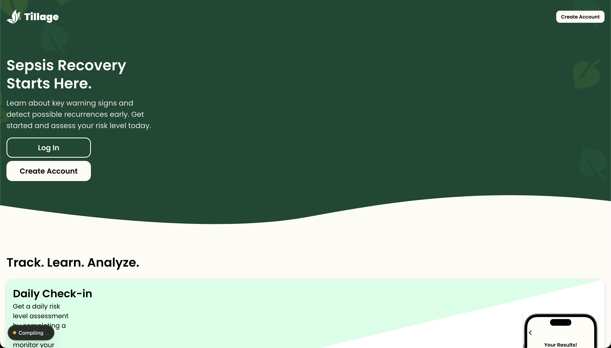
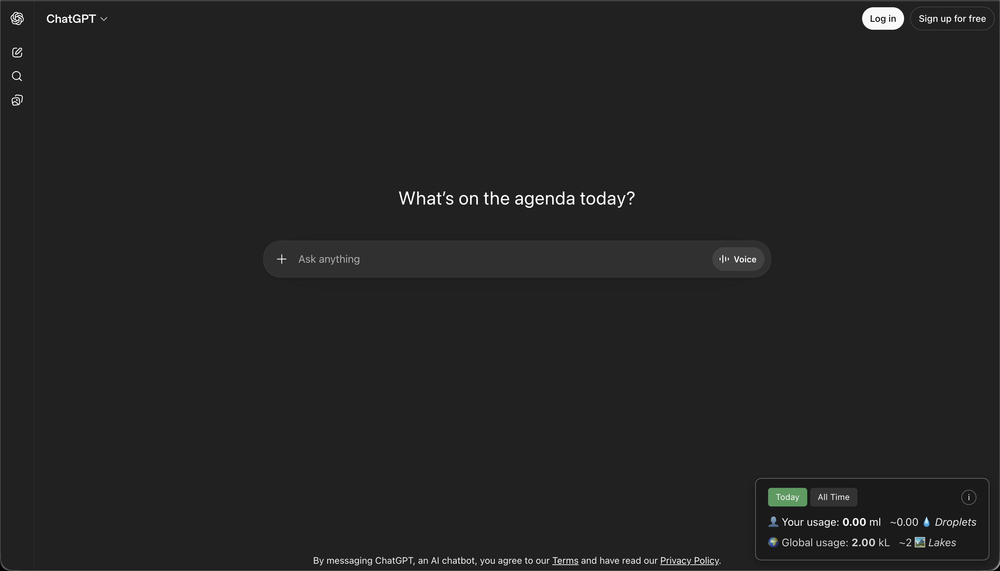
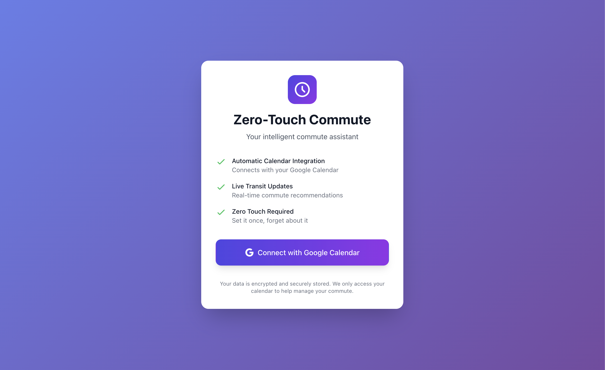
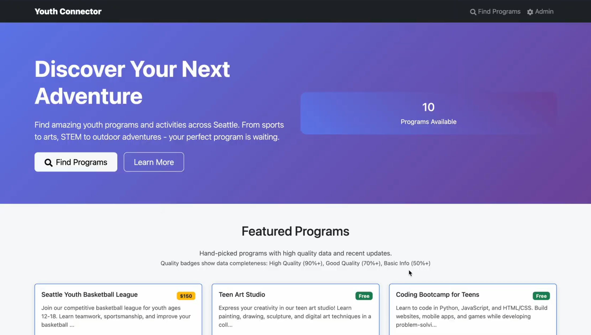
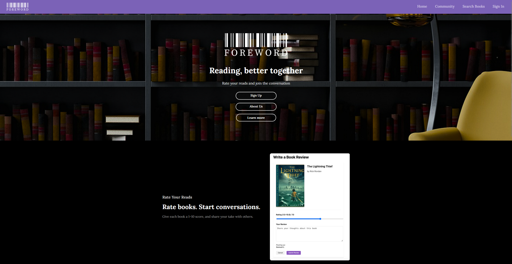
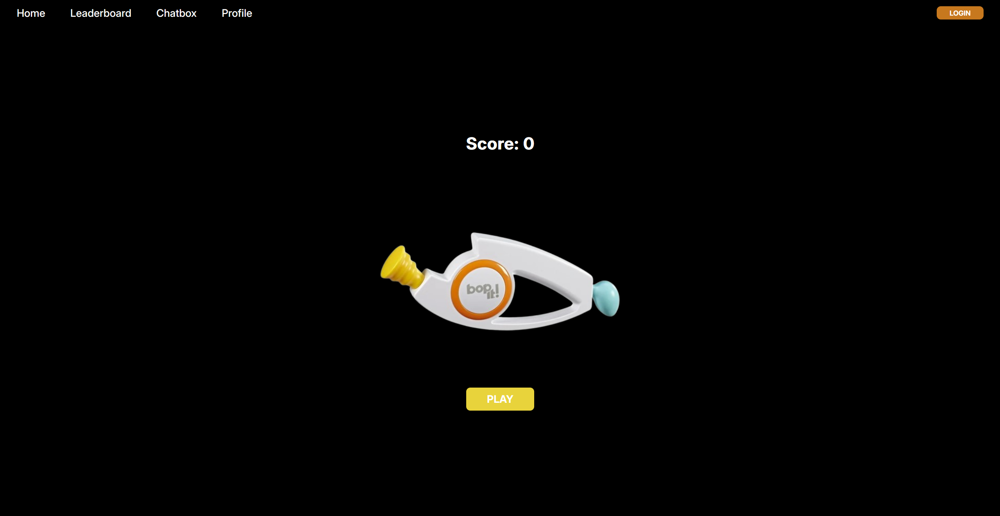
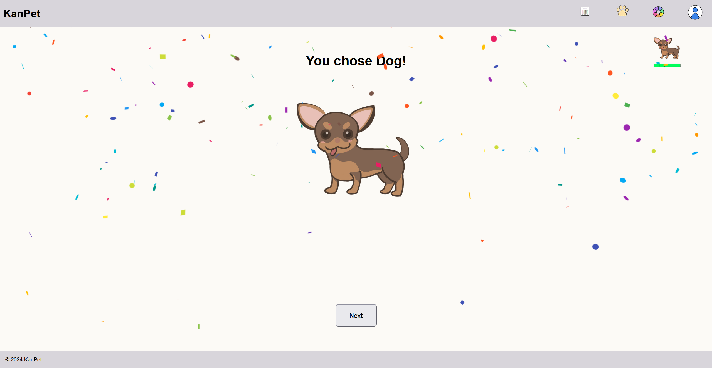

My Projects
Tillage | Demo
Sponsored by PeaceHealth • Informatics Capstone 2026 | Next.js, Supabase, Vercel, TypeScript, Tailwind CSS

Sepsis is a life-threatening condition with a staggering readmission rate: 1 in 5 survivors return to the hospital within 30 days of discharge, and 1 in 3 within 90 days. For our capstone project, our team partnered with Dr. Jay Keith to develop a web application aimed at reducing these rates during the most critical window of patient recovery. The app centers around daily check-ins, educational modules, and personalized notifications that help users consistently monitor their symptoms and understand their risk of reinfection. Our goal was not just clinical utility but equity, making post-discharge sepsis care more accessible to survivors who may otherwise lack consistent medical support.
Our process began by meeting with Dr. Keith to align with his vision, followed by background research into existing solutions and the broader landscape of sepsis recovery. We built an initial Figma prototype and conducted user interviews with nurses, doctors, and sepsis survivors. We used that feedback to iterate upon our UI and question flow, balancing clinical relevance with simplicity. On the implementation side, I translated our designs directly into Tailwind-styled screens. I also built out the quiz logic that powers both our daily check-in and onboarding pages. Each question is represented as a structured object with its own properties, valid answer configurations, and branching logic. They are then dynamically rendered through a shared display component that handles all standard user navigation and state tracking. Additionally, I designed the database schema, modeling users and their daily check-in records with Supabase, which also handles user authentication.
As a team, we've learned how to actively incorporate stakeholder values into the product. This meant consistently bringing stakeholders into the development process and translating feedback into concrete design decisions. Individually, I feel blessed to be part of a team with such punctual and succinct communication. Any problems that arise are much easier to handle because we simply talk to each other. I've also gained a deeper understanding of how to balance competing priorities, especially when simplicity, clinical accuracy, and usability did not perfectly align. Working through these tradeoffs helped me become more intentional in my design and engineering decisions, focusing on building a solution that is both practical and meaningful for real users. Our next steps include completing the education modules, strengthening security and legal compliance, and running usability tests.
AwareAI
WINFO 2026 | Manifest V3, JavaScript, Firestore REST

AwareAI is a Chrome extension that tracks the water usage generated through a user's LLM prompts. Developed at WINFO 2026, this project introduced my team and I to the world of browser extension development, from understanding the Chrome extension architecture with Manifest V3 to building per-platform input capture across ChatGPT, Gemini, and Claude. One of our biggest technical challenges was determining how to calculate water consumption per prompt. We decided to base the calculation off the length of the user's prompt, which we understood wasn't the most complete or accurate method, but it gave us a working product and freed us up to focus on other features like the usage display and syncing global usage through a Firebase backend.
We competed in the Best Implementation track and had the opportunity to present to seven judges, receiving some of the most encouraging feedback we've gotten at a hackathon. Several explicitly told us they'd like to use this extension for themselves, and one suggested a Spotify Wrapped-style breakdown of a user's water footprint—an idea we'd love to implement in the future. Although we didn't final, AwareAI represents our best hackathon performance to date. After reflecting on how far we've come since our earlier projects, I couldn't be more proud of what our team put together.
Zero-Touch Commute Assistant
DubHacks 2025 | AWS Lambda, Bedrock, React, Node.js

Zero-Touch Commute Assistant was a project we developed at DubHacks to automate the daily decision of "when to leave" for frequent commuters. We engineered a serverless, event-driven system using AWS Lambda, Bedrock, and the OneBusAway API to parse Google Calendar schedules and deliver real-time transit alerts. By leveraging Generative AI for semantic event classification, the app could intelligently understand a user's day without manual input. This project was a major step into cloud-native architecture for me. It shifted my focus from monolithic app development to orchestrating distinct cloud services, teaching me how to leverage AI and serverless functions to solve a specific, friction-heavy user problem under the time constraints of a hackathon.
Youth Connector
City of Seattle 2025 | React, FastAPI, BeautifulSoup

Youth Connector was a solution we developed for the City of Seattle’s innovation hackathon, aimed to improve awareness and access to youth and young adult enrichment programs across the greater Seattle area. Using React, FastAPI, and BeautifulSoup, we built a platform that aggregates unstructured data from various city and non-city sources into a centralized, searchable catalog. We effectively combined the hackathon's concepts of catalog builders, curators, and sync agents to ensure data remained fresh, while our "Spark Finder" engine helped match users to opportunities based on their specific interests. Participating in this challenge highlighted the intersection of civic responsibility and technology for me. It required us to think critically about data accessibility and consistent synchronization, ensuring that our technical solution could genuinely improve awareness and access for youth across the city.
Foreword
React, Firebase, NoSQL, OpenLibrary API

Foreword is a social reading platform I developed with React, Firebase, and the OpenLibrary API. The project began when our team was tasked with addressing a Sustainable Development Goal. We chose to focus on education, specifically aiming to increase reading engagement among our peers. On the website, users can discover books, share reviews, and interact with a community of readers. Beyond the technical implementation, this project gave my team and I the chance to really dive into the software development cycle. We practiced defining functional requirements, making architectural decisions, writing specifications, and rigorously testing and debugging. The result was a polished MVP that I am immensely proud of, and a much deeper understanding of how to take an idea from concept to working product.
Bop It!
React, Node.js, Express, MongoDB, Azure AD

Bop It! was a fun challenge of a project where my team and I recreated the classic game as a full-stack web application. Built with React, Node.js, Express, and MongoDB, it featured secure login with Azure AD, real-time score tracking, and a competitive leaderboard. The main focus here was on the backend functionality, includingdesigning RESTful APIs, handling game logic, and ensuring user data persisted reliably. Choosing such a fun concept made the process of learning backend development both memorable and rewarding.
KanPet
HTML/CSS, JavaScript, React, Figma

KanPet was my first web app, a gamified task manager inspired by kanban boards. This project focused on frontend functionality, where my team and I designed the interface in Figma and Miro, then implemented it with React using Hooks-based state management. Users can create dynamic boards, track milestones, and earn cosmetic rewards for task completion. For me, the learning came from bridging design and implementation. This meant taking wireframes and turning them into functional features, while also considering how design choices affect usability and motivation.